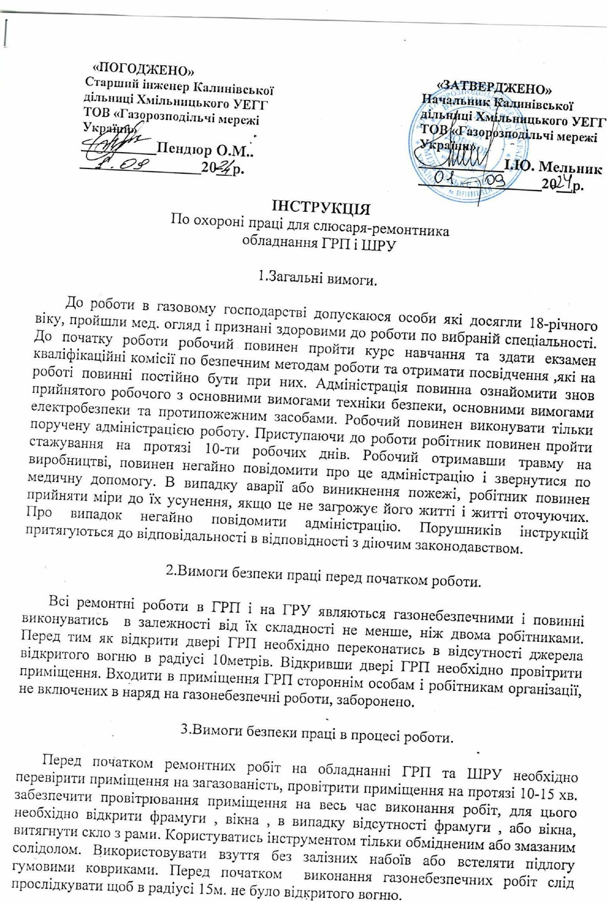
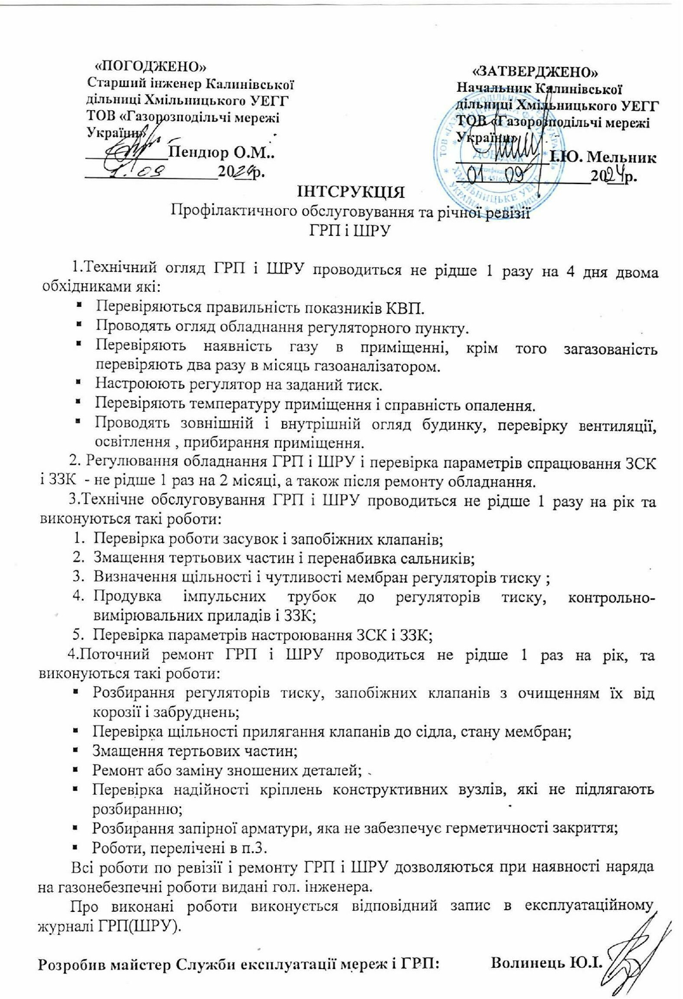
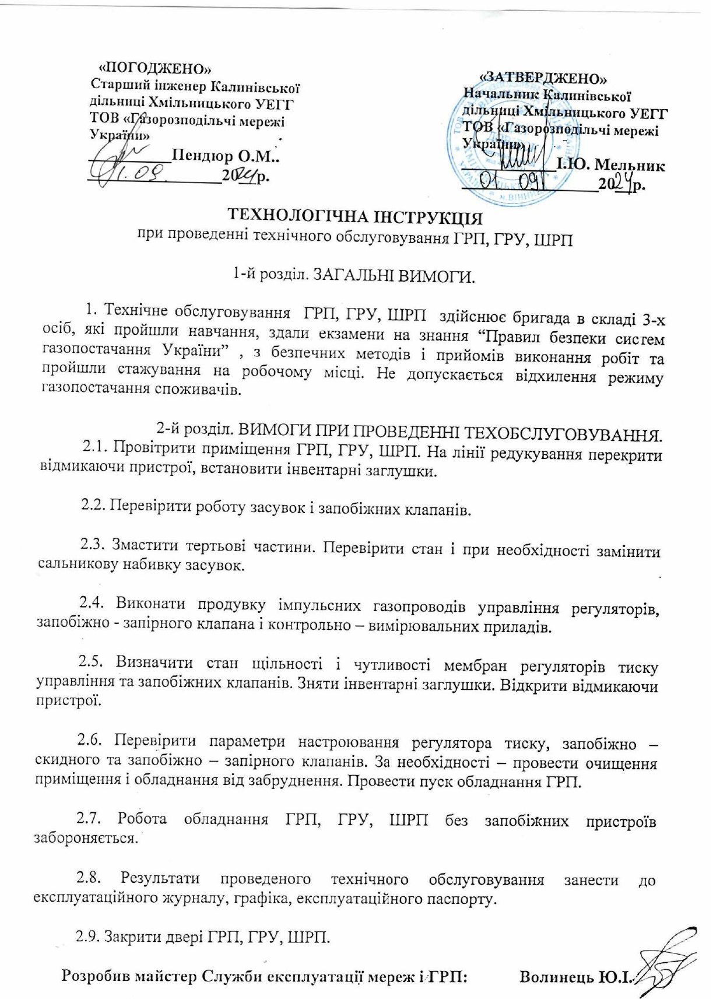
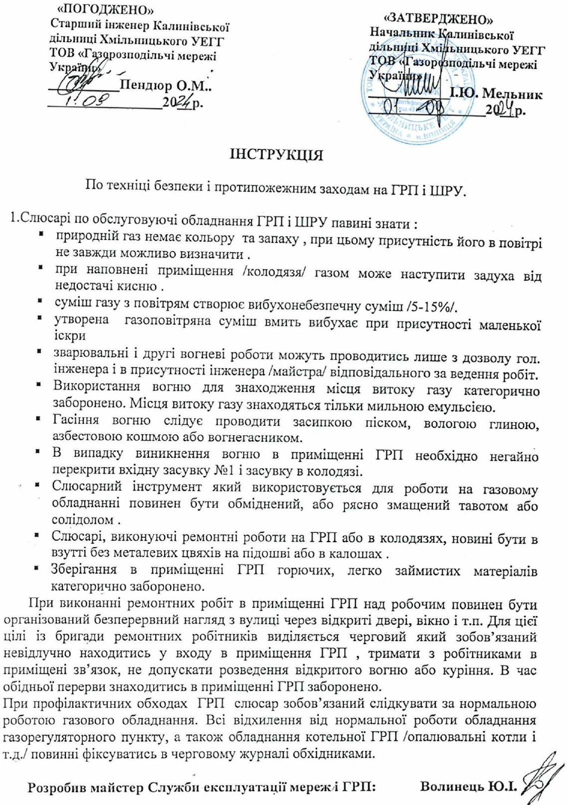

Інструкції та навчальні відео
Інструкції
-
Інструкція по охороні праці для слюсаря-ремонтника обладнання ГРП і ШГРП

-
Інструкція профілактичного обслуговування та річної ревізії

-
Технологічна інструкція при проведенні технічного обслуговування ГРП, ШГРП, ГРУ

- Інструкція по переходу на обвідну лінію (байпас)
-
Інструкція по техніці безпеки і протипожежним заходам на ГРП і ШГРП
